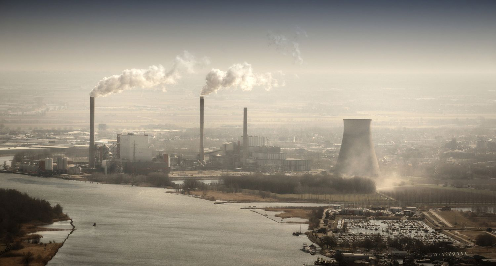
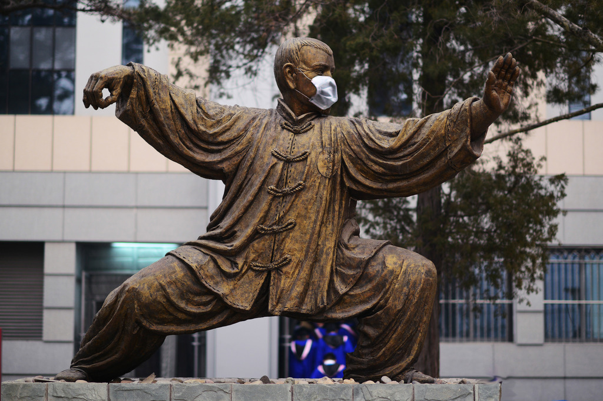
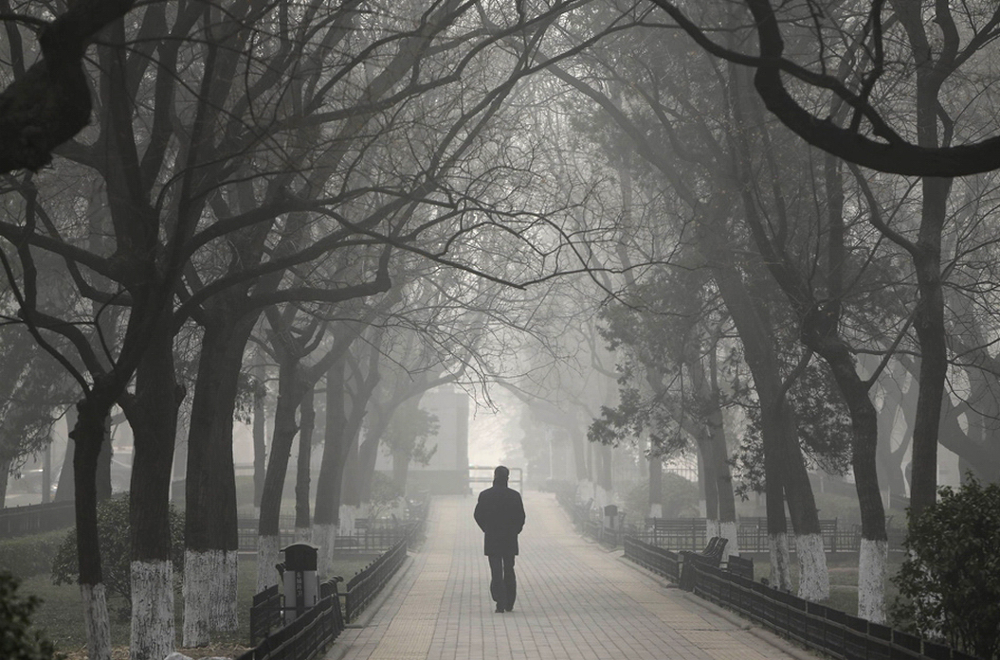

40 Facts About Smog
Everyone on earth knows that air pollution is hazardous to health. The effects of air pollution can have devastating effects on your health and the environment. Here is an interesting way to analyze how air pollution is gradually causing so many deaths worldwide. One may even to fail to count the effects of air pollution and the striking figures floating around this environmental issue.

Fact 1:
An average American breathe 2 gallons of air per minute which means around 3400 gallons of air each day.Fact 2:
Inhaling air pollution takes away at least 1-2 years of a typical human life.Fact 3:
It has effects as small as burning eyes and itchy throat to as large as breathing problems and death.Fact 4:
Pollutants that are released into the air, as opposed to land and water pollutants, are the most harmful.Fact 5:
Rising levels of air pollution in Beijing has brought a new disease – Beijing cough.Fact 6:
Air pollution is not a recent occurrence. In 1952, the Great Smog of London killed 8000 people.Fact 7:
Deaths caused by air pollution cost the European Union €161 billion.Fact 8:
Electric vehicles produce less air pollutants. They stir up dirt but without producing gases.Fact 9:
Producing heavy crude oil increases chances of air pollution by 40% than producing light crude oil.Fact 10:
According to the Lancet journal, air pollution caused by waiting in traffic increases the chances of death caused due to heart attack.Fact 11:
Toxic air pollution poses a greater threat to children, due to their smaller physical size and lung capacity.Fact 12:
Air pollution and resulting deaths are increasing fastest in Asia.Fact 13:
Air pollution that causes smog affects dolphins and makes them suffer from black lung diseases.Fact 14:
70% of the air pollution caused in Chinese cities is due to tailpipes.
Fact 15:
5,000 premature deaths in Southern California are caused due to pollution from diesel trucks.Fact 16:
Travels at Grand Canyon are unable to see the other side due to air pollution, is 1000 miles away.Fact 17:
The most hazardous pollutants are released from the air and less from the water and land together.Fact 18:
The best ways to reduce air pollution are by walking and riding bicycle.Fact 19:
A single bus caries passengers which are likely to drive 40 cars.Fact 20:
28% of the Americans believe they are most affected by air pollution caused by vehicles.Fact 21:
Air pollution in China can travel up to Central Valley of California.Fact 22:
Outdoor air pollution outdoor, ranks in the top ten killers on earth.Fact 23:
65% of the deaths in Asia and 25% deaths in India are due to air pollution.Fact 24:
2 million cars in Manila, Philippines cause 80% of air pollution.Fact 25:
Air pollution in India is estimated to cause 527, 700 deaths every year.Fact 26:
The number of people who die in America every year due to air pollution is above 50,000.Fact 27:
80% of lung diseases are caused due to pollution from other cars, buses, trucks and other vehicles.